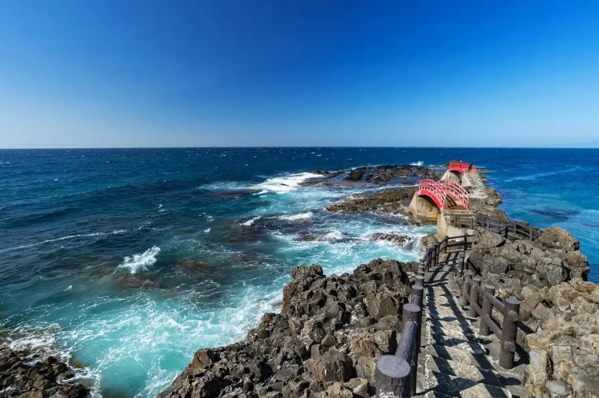
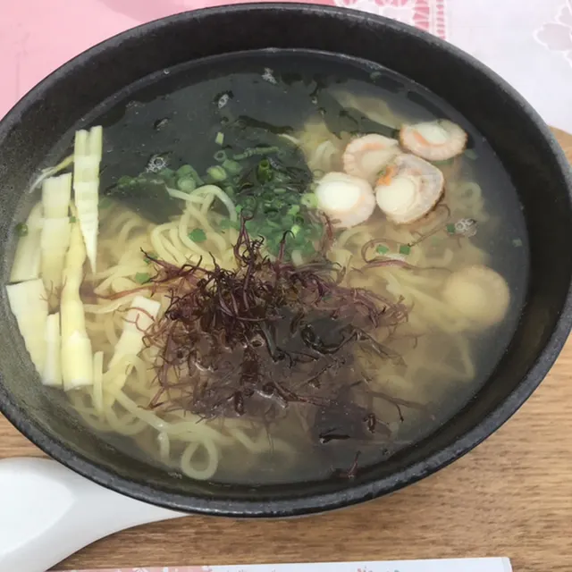
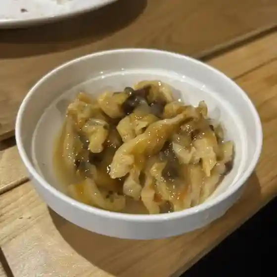
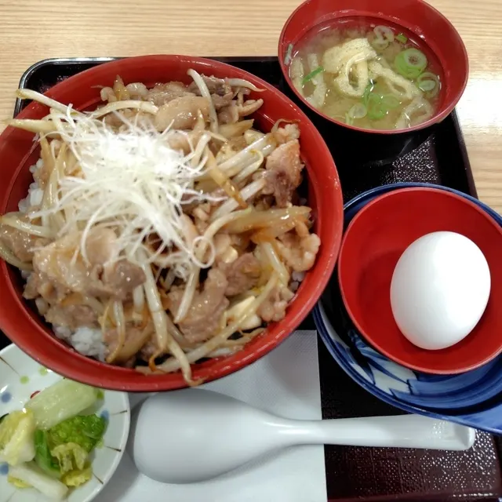
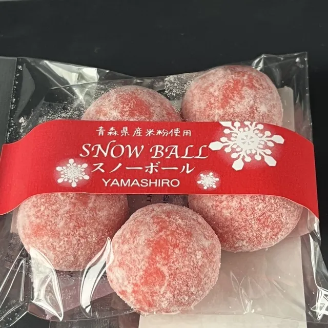
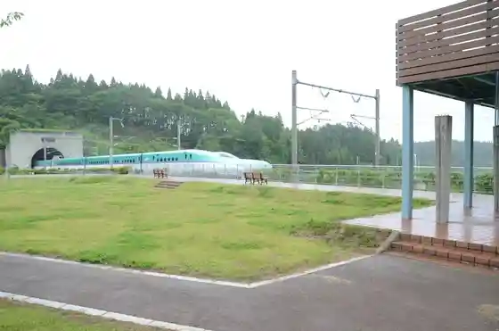
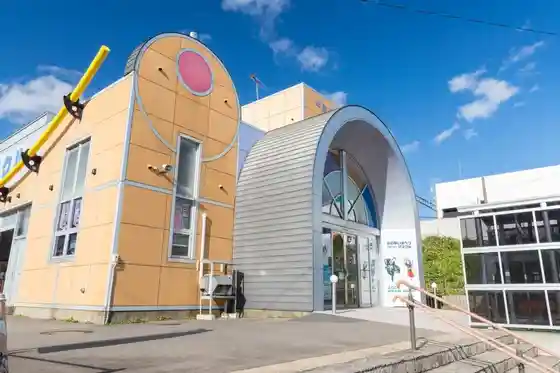
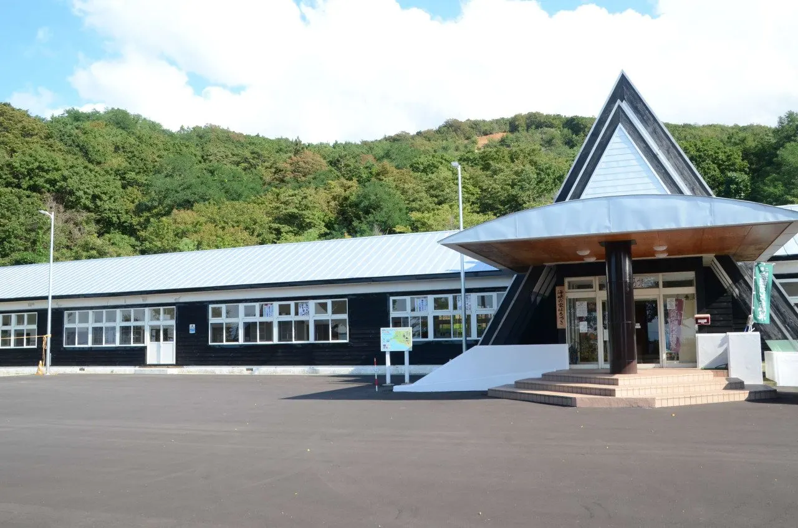
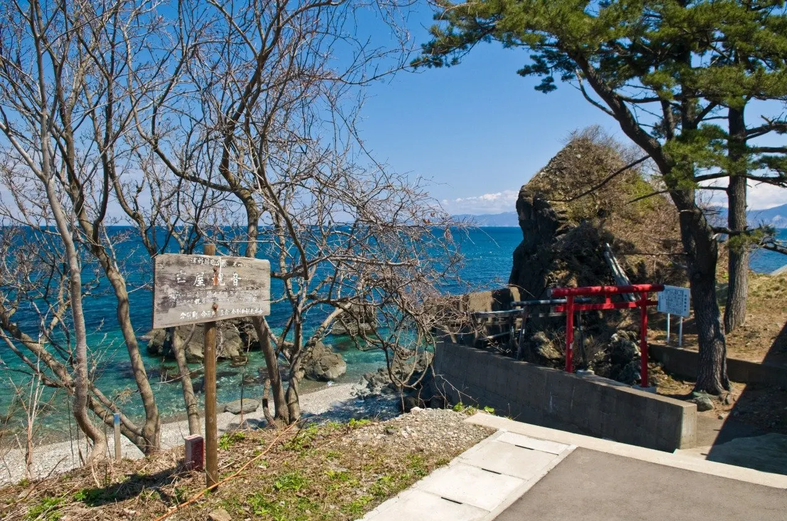

Imabetsu
Imabetsu · Aomori
Imabetsu
Highlighted on the Aomori map.

Stay
海峡の家ほろづき
Kaikyo no Ie Horozuki
Former school turned self-catering lodge in Imabetsu, Aomori.
民宿川端
Minshuku Kawabata
Guesthouse (minshuku) in Imabetsu, Aomori.
Café＆民宿風の丘
Cafe & Minshuku Kaze no Oka
Guesthouse (minshuku), April to November in Imabetsu, Aomori.
農家民宿 荒馬の里
Farm Stay Araumanosato
Farm guesthouse in a restored old house in Imabetsu, Aomori.
Dining
海の駅 高野崎

Umi No Eki Takanosaki
ファミリーマート 今別町店
Famiriimaato Imabetsu Machi Mise
さらしなそば屋
Sarashinasoba Ya
ささ舟
Sasa Fune
寿司長
Sushi Chou
山水
Sansui
まごころ

Magokoro
れすとらん驛

Resutoran Eki
道の駅いまべつ半島プラザアスクル

Michi No Eki Imabetsu Han Shima Purazaasukuru
Sights
Cape Takanosaki (Horozuki Coast)
Scenic cape in Tsugaru Quasi-National Park with views of Hokkaido, Cape Tappi and the Shimokita Peninsula, and a red-and-white lighthouse.
Seikan Tunnel Entrance Plaza

Plaza at the Honshu entrance of the 53.85 km Seikan Tunnel, the undersea rail link to Hokkaido.
Roadside Station Imabetsu (Hanto Plaza Asukul)

Seikan Tunnel-themed roadside station next to Okutsugaru-Imabetsu Shinkansen Station, with tourist info and rentals.
Kaikyo no Ie Horozuki

Renovated wooden junior high school building near Cape Takanosaki, now a lodging and community facility.
Iwaya Kannon

Kannon hall set in a natural rock cave near the Horozuki coast, recorded since the Edo period.
Red Rocks of Akanezawa
Iron-oxide red seaside rocks on the Tsugaru Strait, a prefectural natural monument once mined for red pigment.
Daruma Falls
Two-tiered waterfall on Route 280 whose shape resembles a Daruma doll.
Igamasaki Campground
Lawn campground on the Horozuki coast, popular for rock-pool play and fishing.
Cape Igamasaki
70 m sea cliffs with candle- and dog-shaped rocks in Tsugaru Quasi-National Park.
Hongakuji Temple
Jodo-sect temple rebuilt in 1651, said to be the oldest temple on the Tsugaru Peninsula.